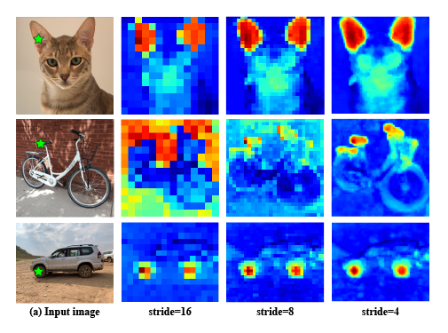

We illustrate the effect of using overlapping patches in the ViT input preparation stage. For each input image (a) we show the similarity heatmap between the source point (marked in a green star) and all the target points. Notice the spatial granularity increases as the stride decreases, without any aliasing or other degradation effects. More information in the technical details document.
